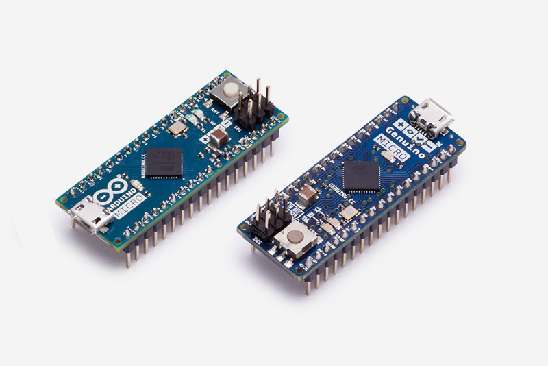

Arduino MICRO (USA only)
& Genuino MICRO (outside USA)
& Genuino MICRO (outside USA)
The Micro is the smallest board of the family, easy to integrate it in everyday objects to make them interactive. The Micro is based on the ATmega32U4 microcontroller featuring a built-in USB which makes the Micro recognisable as a mouse or keyboard.
Overview
5V
8-bit
16 MHz
AVR
The Micro is a microcontroller board based on the ATmega32U4 (datasheet), developed in conjunction with Adafruit.
It has 20 digital input/output pins (of which 7 can be used as PWM outputs and 12 as analog inputs), a 16 MHz crystal oscillator, a micro
USB connection, an ICSP header, and a reset button. It contains everything needed to support the microcontroller; simply connect it to a
computer with a micro USB cable to get started. It has a form factor that enables it to be easily placed on a breadboard.
The Micro board is similar to the Arduino Leonardo in that the ATmega32U4 has built-in USB communication, eliminating the need for a secondary
processor. This allows the Micro to appear to a connected computer as a mouse and keyboard, in addition to a virtual (CDC)
serial / COM port. It also has other implications for the behavior of the board; these are detailed on the getting started page.
You can find here your board warranty informations.
Getting Started
You can find in the Getting Started section all the information you need to configure your board,
use the Arduino Software (IDE), and start tinker with coding and electronics.
Need Help?
- On the Software on the Arduino Forum
- On Projects on the Arduino Forum
- On the Product itself through our Customer Support
Get inspired
Discover some Arduino and Genuino Micro projects featured from Arduino Project Hub, our tutorial platform:
Technical specs
| Microcontroller | ATmega32U4 |
| Operating Voltage | 5V |
| Input Voltage (recommended) | 7-12V |
| Input Voltage (limit) | 6-20V |
| Digital I/O Pins | 20 |
| PWM Channels | 7 |
| Analog Input Channels | 12 |
| DC Current per I/O Pin | 20 mA |
| DC Current for 3.3V Pin | 50 mA |
| Flash Memory | 32 KB (ATmega32U4) of which 4 KB used by bootloader |
| SRAM | 2.5 KB (ATmega32U4) |
| EEPROM | 1 KB (ATmega32U4) |
| Clock Speed | 16 MHz |
| LED_BUILTIN | 13 |
| Length | 48 mm |
| Width | 18 mm |
| Weight | 13 g |
Documentation
OSH: Schematics, Reference Design, Board size
Arduino / Genuino Micro is open-source hardware! You can build your own board using the follwing files:EAGLE FILES
IN .ZIP
IN .ZIP
SCHEMATICS
IN .PDF
IN .PDF

BOARD SIZE
IN .DXF
IN .DXF
Programming
The Micro board can be programmed with the Arduino Software (IDE). Select "Arduino/Genuino Micro from the Tools > Board menu. For details, see the reference and tutorials.
The ATmega32U4 on the Micro comes preprogrammed with a bootloader that allows you to upload new code to it without the use of an external hardware programmer.
It communicates using the AVR109 protocol.
You can also bypass the bootloader and program the microcontroller through the ICSP (In-Circuit Serial Programming) header using
Arduino ISP or similar; see these instructions for details.
Warnings
The Micro has a resettable polyfuse that protects your computer's USB ports from shorts and overcurrent. Although most computers provide their own internal protection,
the fuse provides an extra layer of protection. If more than 500 mA is applied to the USB port, the fuse will automatically break the connection until the short or overload is removed.
Power
The Micro can be powered via the micro USB connection or with an external power supply. The power source is selected automatically.
External (non-USB) power can come either from a DC power supply or battery. Leads from a battery or DC power supply can be connected to the Gnd and Vin pins.
The board can operate on an external supply of 6 to 20 volts. If supplied with less than 7V, however, the 5V pin may supply less than five volts and the board
may become unstable. If using more than 12V, the voltage regulator may overheat and damage the board. The recommended range is 7 to 12 volts.
The power pins are as follows:
- VI. The input voltage to the MICRO board when it's using an external power source (as opposed to 5 volts from the USB connection or other regulated power source). You can supply voltage through this pin.
- 5V. The regulated power supply used to power the microcontroller and other components on the board. This can come either from VIN via an on-board regulator, or be supplied by USB or another regulated 5V supply.
- 3V. A 3.3 volt supply generated by the on-board regulator. Maximum current draw is 50 mA.
- GND. Ground pins.
Memory
The ATmega32U4 has 32 KB (with 4 KB used for the bootloader). It also has 2.5 KB of SRAM and 1 KB of EEPROM (which can be read and written with the EEPROM library).
Input and Output
See the mapping between Arduino pins and ATmega 32U4 ports, and the Pin Mapping of the Arduino Micro:
PIN MAPPING
ATmega 32U4
ATmega 32U4
PIN MAPPING
MICRO
MICRO
Each of the 20 digital i/o pins on the Micro can be used as an input or output, using pinMode(), digitalWrite(), and digitalRead() functions. They operate at 5 volts. Each pin can provide or receive 20 mA as recommended
operating condition and has an internal pull-up resistor (disconnected by default) of 20-50 k ohm. A maximum of 40mA is the value that must not be exceeded to avoid permanent damage to the microcontroller.
In addition, some pins have specialized functions:
- Serial: 0 (RX) and 1 (TX). Used to receive (RX) and transmit (TX) TTL serial data using the ATmega32U4 hardware serial capability. Note that on the Micro, the Serial class refers to USB (CDC) communication; for TTL serial on pins 0 and 1, use the Serial1 class.
- TWI: 2 (SDA) and 3 (SCL). Support TWI communication using the Wire library.
- External Interrupts: 0(RX), 1(TX), 2, 3 and 7. These pins can be configured to trigger an interrupt on a low value, a rising or falling edge, or a change in value. See the attachInterrupt() function for details.
- PWM: 3, 5, 6, 9, 10, 11 and 13. Provide 8-bit PWM output with the analogWrite() function.
- SPI: on the ICSP header. These pins support SPI communication using the SPI library. Note that the SPI pins are not connected to any of the digital I/O pins as they are on the Uno, they are only available on the ICSP connector and on the nearby pins labelled MISO, MOSI and SCK.
- RX_LED/SS This is an additional pin compared to the Leonardo. It is connected to the RX_LED that indicates the activity of transmission during USB communication, but is can also used as slave select pin (SS) in SPI communication.
- LED: 13. There is a built-in LED connected to digital pin 13. When the pin is HIGH value, the LED is on, when the pin is LOW, it's off.
- Analog Inputs: A0-A5, A6 - A11 (on digital pins 4, 6, 8, 9, 10, and 12). The Micro has a total of 12 analog inputs, pins from A0 to A5 are labelled directly on the pins and the other ones that you can access in code using the constants from A6 trough A11 are shared respectively on digital pins 4, 6, 8, 9, 10, and 12. All of which can also be used as digital I/O. Each analog input provide 10 bits of resolution (i.e. 1024 different values). By default the analog inputs measure from ground to 5 volts, though is it possible to change the upper end of their range using the AREF pin and the analogReference() function.
There are a couple of other pins on the board:
- AREF. Reference voltage for the analog inputs. Used with analogReference().
- Reset. Bring this line LOW to reset the microcontroller. Typically used to add a reset button to shields which block the one on the board.
Communication
The Micro has a number of facilities for communicating with a computer, another board of the Arduino & Genuino family, or other microcontrollers. The 32U4 provides UART TTL (5V) serial
communication, which is available on digital pins 0 (RX) and 1 (TX). The ATmega32U4 also allows for serial (CDC) communication over USB and appears as a virtual com port to software on the computer.
The chip also acts as a full speed USB 2.0 device, using standard USB COM drivers. On Windows, a .inf file is required . The Arduino Software (IDE) includes a serial monitor which allows simple textual
data to be sent to and from the board. The RX and TX LEDs on the board will flash when data is being transmitted via the USB connection to the computer (but not for serial communication on pins 0 and 1).
A SoftwareSerial library allows for serial communication on other Micro's digital pins.
The ATmega32U4 also supports I2C (TWI) and SPI communication. The Arduino Software (IDE) includes a Wire library to simplify use of the I2C bus; see the documentation for details. For SPI communication, use the SPI library.
The Micro appears as a generic keyboard and mouse, and can be programmed to control these input devices using the Keyboard and Mouse classes.
Physical Characteristics
The maximum length and width of the Micro PCB are 4.8cm and 1.77cm respectively, with the USB connector extending beyond the former dimension.
The layout allows for easy placement on a solderless breadboard..
Automatic (Software) Reset and Bootloader Initiation
Rather than requiring a physical press of the reset button before an upload, the Micro board is designed in a way that allows it to be reset by software running on a connected computer.
The reset is triggered when the Micro's virtual (CDC) serial / COM port is opened at 1200 baud and then closed. When this happens, the processor will reset, breaking the USB connection
to the computer (meaning that the virtual serial / COM port will disappear). After the processor resets, the bootloader starts, remaining active for about 8 seconds. The bootloader can
also be initiated by pressing the reset button on the Micro. Note that when the board first powers up, it will jump straight to the user sketch, if present, rather than initiating the bootloader.
Because of the way the Micro handles reset it's best to let the Arduino Software (IDE) try to initiate the reset before uploading, especially if you are in the habit of pressing the reset button
before uploading on other boards. If the software can't reset the board, you can always start the bootloader by pressing the reset button on the board.
Share


{kind=link}